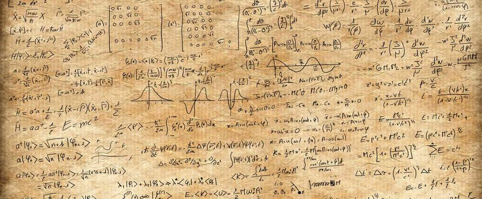
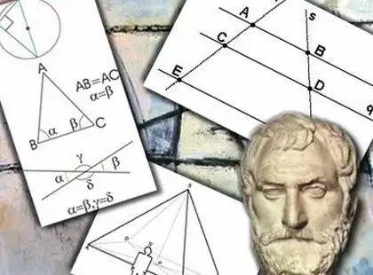

Aprenda um pouco da hisória de matemática
Ler
Egito e Mesopotâmia
A matemática nasceu da necessidade prática de medir terras, contar rebanhos e cobrar impostos nas primeiras civilizações, como o Antigo Egito e a Mesopotâmia, por volta de 3500 a.C
Saber mais
Abstração e Dedução
Filósofos como Tales de Mileto e Pitágoras transformaram regras práticas em uma ciência dedutiva e demonstrativa.
Saber mais